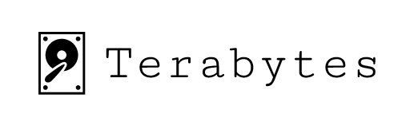

Terabytes is a hosted Elasticsearch Logstash Kibana (ELK) stack, built with performance and reliability in mind.
ELK stack is the most popular open-source log analysis platform. Terabytes provides an enterprise-grade, scalable log aggregation and analysis platform without you having to worry about running an ELK stack.
Terabytes is competitively priced.